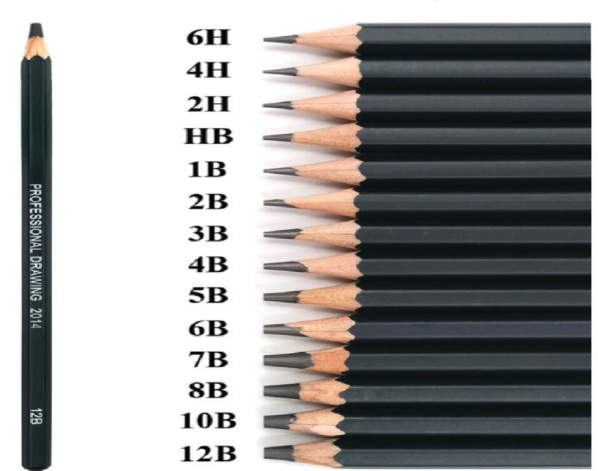

Materials and equipment for drawing
There are various materials and equipment an artist can use to create drawings. Some of these materials are as follows:
Materials for drawing
These are media used in drawing activities and exercises. They include graphite pencils, charcoal, colour pencils, pen and ink, marker pens, chalk, drawing pads, crayons, colours, drawing papers and sketchbooks.
Graphite pencils: These are pencils with a thin graphite core embedded in a shell of wood, plastic or other materials. Graphite pencils are basic drawing materials which can be used according to the need and expected quality of the image. These pencils are categorised into various types from soft to hard basing on the densities of their core. Hard pencils are marked by the letter H, Soft pencils are marked by the letter B which means black and medium pencils are marked by the letter HB which stands for hard black. Hard pencils are suitable for making lighter lines and sketches while soft pencils are best for rendering darker tones. Figure 2.6 shows a variety of pencils.

Charcoal: These include various forms of dry art medium materials used when the artist intends to draw a picture with very dark tones. Charcoal is preferable since it makes it easy to shade large areas at a time. Charcoal produces heavy lines